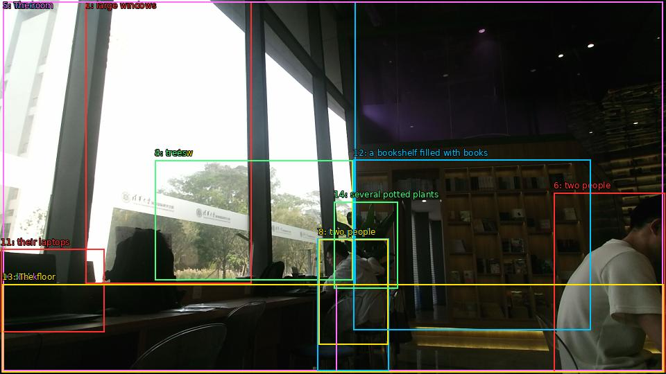

The image shows a modern office space with large windows that offer a view of trees and buildings outside. The room is dimly lit with natural light coming in from the large windows. There are two people sitting at a desk in front of the desk, working on their laptops. On the right side of the image, there is a bookshelf filled with books. The floor is made of wood and there are several potted plants scattered around the room. The overall atmosphere of the space is cozy and inviting.

Original · Caption raw · Grounding raw · Koordinate
Številke so lokalni ID regije. Dolge slikovne oznake so skrajšane; spodaj so celotne fraze. Napovedane regije se lahko prekrivajo ali opisujejo skupine.
| ID | Celotna fraza | bbox xyxy |
|---|---|---|
| 1 | large windows | [123.36000061035156, 2.9700000286102295, 362.3999938964844, 409.0500183105469] |
| 2 | windows | [4.319999694824219, 2.9700000286102295, 512.1599731445312, 411.21002197265625] |
| 3 | a view | [223.1999969482422, 231.3900146484375, 508.3199768066406, 404.19000244140625] |
| 4 | trees | [223.1999969482422, 231.3900146484375, 509.2799987792969, 404.19000244140625] |
| 5 | The room | [4.319999694824219, 2.9700000286102295, 955.6799926757812, 535.9500122070312] |
| 6 | two people | [798.239990234375, 278.3700256347656, 958.5599975585938, 537.5700073242188] |
| 7 | two people | [457.44000244140625, 344.7900085449219, 560.1599731445312, 535.9500122070312] |
| 8 | two people | [459.3599853515625, 345.33001708984375, 559.2000122070312, 497.07000732421875] |
| 9 | desk | [3.359999895095825, 410.1300048828125, 485.2799987792969, 537.030029296875] |
| 10 | desk | [2.3999998569488525, 410.1300048828125, 485.2799987792969, 537.5700073242188] |
| 11 | their laptops | [1.4399999380111694, 359.9100036621094, 150.239990234375, 479.2500305175781] |
| 12 | a bookshelf filled with books | [509.2799987792969, 230.85000610351562, 851.0399780273438, 476.5500183105469] |
| 13 | The floor | [3.359999895095825, 410.1300048828125, 956.6399536132812, 537.5700073242188] |
| 14 | several potted plants | [481.44000244140625, 291.33001708984375, 573.5999755859375, 416.07000732421875] |